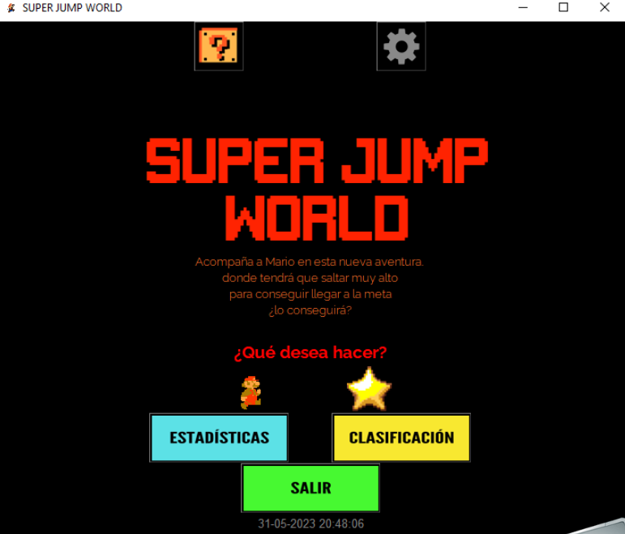
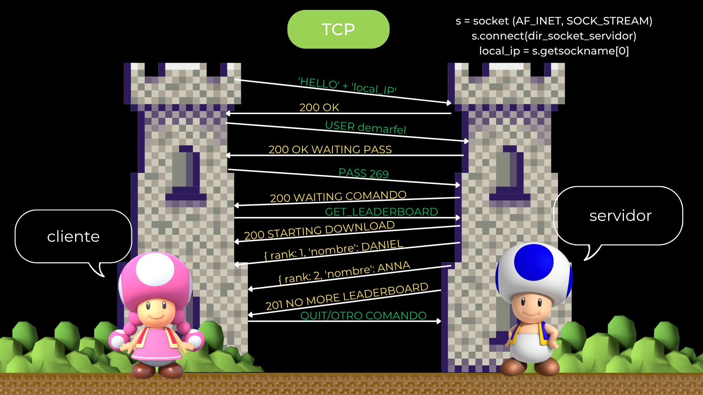
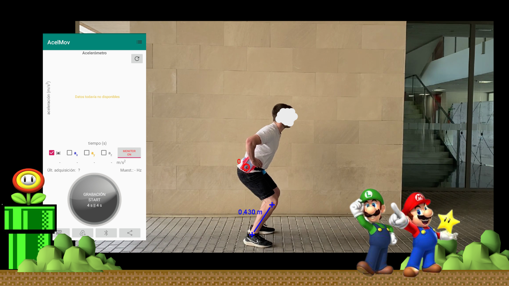
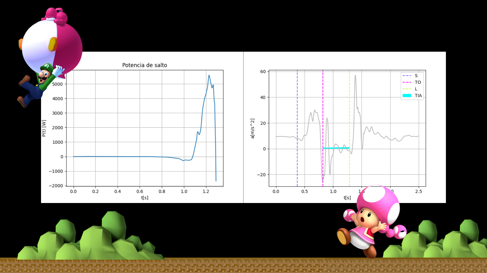
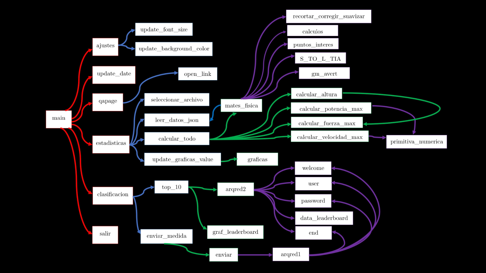

Super Jump World -
Physics meets Python
An interdisciplinary first-year project (PROMU) integrating programming, network architecture, mathematics, and physics into a single desktop application: a jump analyser that measures real human jumps using a smartphone accelerometer, processes the data with numerical methods, and syncs results across a custom TCP network.
What PROMU is
PROMU is UPV's first-year interdisciplinary project format, where four independent subjects - Programming, Network Architecture, Mathematics and Physics - converge into a single shared deliverable. Each module contributes a real technical component; the challenge is making them work together as one coherent system. Our project was called Super Jump World: a desktop application that analyses human vertical jumps using real accelerometer data collected from a phone.
Programming
Desktop GUI application
Built primarily as a desktop application using Python + GUIzero. We also explored an early UI prototype in Kivy to understand how a cross-platform mobile version could be structured, although it remained at the design and experimentation stage since mobile development had not yet been covered in the curriculum.
Network Architecture
Custom TCP protocol
Designed and implemented a client-server TCP protocol from scratch. Clients authenticate with USER/PASS, send measurement data, and retrieve the global leaderboard via GET_LEADERBOARD.
Mathematics
Numerical integration
Derived velocity and position from raw accelerometer data using numerical integration (primitiva_numerica). Applied signal smoothing and correction to filter gravity offset and sensor noise.
Physics
Jump biomechanics
Computed maximum force, velocity, power, and jump height from the processed signal. Identified key instants (S, TO, L, TIA) and validated results against Tracker video analysis (50.9 cm vs 49.4 cm).
Subject 1 - Programming
Two GUIs, one application

Main menu of the GUIzero version with Statistics, Leaderboard, and Exit options. Mario-themed interface styled with a custom RetroMario font and pixel-accurate assets.
The main implementation was developed as a desktop application using GUIzero + Tkinter, enabling rapid prototyping of the full data processing and networking pipeline. In parallel, we experimented with an early interface prototype in Kivy to explore how the system could be adapted to mobile environments. This exploratory version focused on layout structure and navigation concepts rather than full functionality, as mobile development and Java-based tooling were introduced later in the degree.
The call graph (shown in the function diagram) maps the full dependency tree from main through
estadisticas, clasificacion, and ajustes
down to the physics computation functions - clearly separating UI, data, networking, and signal processing layers.
| Python module | Role in the application |
|---|---|
| guizero | GUI framework for the desktop version. Provides Window, Text, PushButton, Box, Picture, Slider, Combo, TextBox. |
| kivy | Cross-platform GUI for the mobile-ready version. Runs on all major desktop OSes, Android, iOS, and Raspberry Pi. |
| pygame | Audio playback. Loads and plays background music and sound effects (pipe.wav). |
| tkinter | File picker dialog via filedialog.askopenfilename for loading JSON measurement files. |
| matplotlib.pyplot | Generates all physics and signal charts: force, velocity, power, acceleration module. |
| PIL | Temporarily saves matplotlib figures as images for embedding in the GUIzero interface. |
| sys / os | Application exit and opening external links. |
Subject 2 - Network Architecture
A custom TCP protocol for the leaderboard

Full message sequence: HELLO handshake → USER/PASS authentication → GET_LEADERBOARD → streaming JSON records → 201 NO MORE LEADERBOARD terminator.
We designed a custom application-layer protocol over TCP for synchronising jump scores
across clients. A client connects with socket(AF_INET, SOCK_STREAM),
performs a HELLO + local_IP handshake, authenticates with USER/PASS,
and can then issue commands including GET_LEADERBOARD
and enviar_medida (submit measurement).
The server streams leaderboard entries as individual JSON records and signals the end
with a 201 NO MORE LEADERBOARD message -
a deliberate design choice that avoids sending the entire dataset at once,
making the protocol lightweight and streaming-friendly.
A secondary server (arqred1) handles measurement submission separately from
the leaderboard server (arqred2), keeping the two concerns decoupled.
Subjects 3 & 4 - Mathematics and Physics
From raw accelerometer data to jump height

Smartphone (AcelMov app) strapped to the subject's hip, sampling 3-axis acceleration at ~50 Hz during a countermovement vertical jump. Centre of mass height measured at 43.0 cm.
Raw data comes from a smartphone accelerometer recording a vertical countermovement jump
in JSON format via the AcelMov app. The signal processing pipeline
involves four steps: gravity offset correction, signal smoothing
(recortar_corregir_suavizar),
numerical integration to obtain velocity and position
(primitiva_numerica),
and identification of the four critical instants.
The mathematics module uses a trapezoidal numerical integration approach (S_TO_L_TIA method) to derive velocity from acceleration and position from velocity. This avoids the need for analytical integration, making the method generalizable to any JSON accelerometer file - not just vertical jumps.

Left: Force exercised by the legs during the jump (peak ~5,200 N at takeoff). Right: Points of interest (t1, t2, t3) on the acceleration signal used to identify squat, takeoff, and landing phases.
The four instants we identify are: S (start of squat), TO (takeoff - when feet leave the ground), L (landing), and TIA (time in the air). From these, the system computes jump height, maximum force, maximum velocity, and peak power, and renders them as matplotlib charts embedded in the GUI.
Jump height - our program
50.9 cm
Computed from accelerometer via numerical integration
Jump height - Tracker validation
49.4 cm
Video analysis via Tracker (position tracking frame by frame)
The 1.5 cm discrepancy between our computed result and the Tracker video reference is a 3% relative error - well within the margin expected from smartphone sensor noise, sensor placement variability, and the trapezoidal integration approximation. We considered this a successful validation of the pipeline.
System design
How the four modules connect

main → [ajustes, update_date, qapage, estadisticas, clasificacion, salir]. The estadisticas branch calls into mates_fisica (physics/maths module) which calls calcular_altura, calcular_potencia_max, calcular_fuerza_max, calcular_velocidad_max - all via primitiva_numerica. The clasificacion branch communicates with arqred2 (leaderboard server) and arqred1 (submission server).
The architecture cleanly separates the four academic contributions as Python modules with
well-defined interfaces. Interfaz.py (GUIzero) or Interfaz_Kivy.py
imports Fisica_Matematicas for all signal processing
and Arquitectura_Redes for all networking -
meaning each team member could develop and test their module independently
before integration.
Team and resources
The GTDM crew
Source code is in a private shared repository. The full technical presentation is available below.
Built with
UPV - ETSI Telecomunicación · PROMU · 2022–23